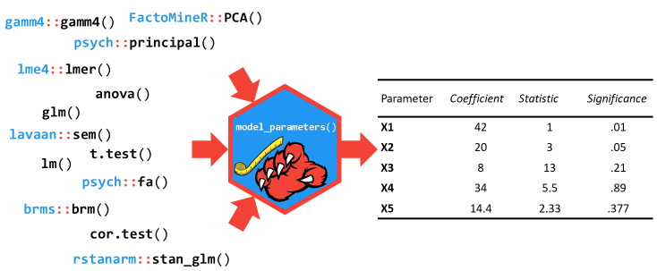

Describe and understand your model’s parameters!
parameters’ primary goal is to provide utilities for processing the parameters of various statistical models (see here for a list of supported models). Beyond computing p-values, CIs, Bayesian indices and other measures for a wide variety of models, this package implements features like bootstrapping of parameters and models, feature reduction (feature extraction and variable selection), or tools for data reduction like functions to perform cluster, factor or principal component analysis.
Another important goal of the parameters package is to facilitate and streamline the process of reporting results of statistical models, which includes the easy and intuitive calculation of standardized estimates or robust standard errors and p-values. parameters therefor offers a simple and unified syntax to process a large variety of (model) objects from many different packages.
Installation

| Type | Source | Command |
|---|---|---|
| Release | CRAN | install.packages("parameters") |
| Development | r - universe | install.packages("parameters", repos = "https://easystats.r-universe.dev") |
| Development | GitHub | remotes::install_github("easystats/parameters") |
Tip
Instead of
library(parameters), uselibrary(easystats). This will make all features of the easystats-ecosystem available.To stay updated, use
easystats::install_latest().
Documentation


Click on the buttons above to access the package documentation and the easystats blog, and check-out these vignettes:
- Summary of Model Parameters
- Parameter and Model Standardization
- Robust Estimation of Standard Errors, Confidence Intervals and p-values
- Model Parameters and Missing Data
- Feature reduction (PCA, cMDS, ICA…)
- Structural models (EFA, CFA, SEM…)
- Parameters selection
- A Practical Guide for Panel Data Analysis
Contributing and Support
In case you want to file an issue or contribute in another way to the package, please follow this guide. For questions about the functionality, you may either contact us via email or also file an issue.
Features
Model’s parameters description

The model_parameters() function (that can be accessed via the parameters() shortcut) allows you to extract the parameters and their characteristics from various models in a consistent way. It can be considered as a lightweight alternative to broom::tidy(), with some notable differences:
- The column names of the returned data frame are specific to their content. For instance, the column containing the statistic is named following the statistic name, i.e., t, z, etc., instead of a generic name such as statistic (however, you can get standardized (generic) column names using
standardize_names()). - It is able to compute or extract indices not available by default, such as p-values, CIs, etc.
- It includes feature engineering capabilities, including parameters bootstrapping.
Classical Regression Models
model <- lm(Sepal.Width ~ Petal.Length * Species + Petal.Width, data = iris)
# regular model parameters
model_parameters(model)
#> Parameter | Coefficient | SE | 95% CI | t(143) | p
#> -------------------------------------------------------------------------------------------
#> (Intercept) | 2.89 | 0.36 | [ 2.18, 3.60] | 8.01 | < .001
#> Petal Length | 0.26 | 0.25 | [-0.22, 0.75] | 1.07 | 0.287
#> Species [versicolor] | -1.66 | 0.53 | [-2.71, -0.62] | -3.14 | 0.002
#> Species [virginica] | -1.92 | 0.59 | [-3.08, -0.76] | -3.28 | 0.001
#> Petal Width | 0.62 | 0.14 | [ 0.34, 0.89] | 4.41 | < .001
#> Petal Length × Species [versicolor] | -0.09 | 0.26 | [-0.61, 0.42] | -0.36 | 0.721
#> Petal Length × Species [virginica] | -0.13 | 0.26 | [-0.64, 0.38] | -0.50 | 0.618
# standardized parameters
model_parameters(model, standardize = "refit")
#> Parameter | Coefficient | SE | 95% CI | t(143) | p
#> -------------------------------------------------------------------------------------------
#> (Intercept) | 3.59 | 1.30 | [ 1.01, 6.17] | 2.75 | 0.007
#> Petal Length | 1.07 | 1.00 | [-0.91, 3.04] | 1.07 | 0.287
#> Species [versicolor] | -4.62 | 1.31 | [-7.21, -2.03] | -3.53 | < .001
#> Species [virginica] | -5.51 | 1.38 | [-8.23, -2.79] | -4.00 | < .001
#> Petal Width | 1.08 | 0.24 | [ 0.59, 1.56] | 4.41 | < .001
#> Petal Length × Species [versicolor] | -0.38 | 1.06 | [-2.48, 1.72] | -0.36 | 0.721
#> Petal Length × Species [virginica] | -0.52 | 1.04 | [-2.58, 1.54] | -0.50 | 0.618
# heteroscedasticity-consitent SE and CI
model_parameters(model, vcov = "HC3")
#> Parameter | Coefficient | SE | 95% CI | t(143) | p
#> -------------------------------------------------------------------------------------------
#> (Intercept) | 2.89 | 0.43 | [ 2.03, 3.75] | 6.66 | < .001
#> Petal Length | 0.26 | 0.29 | [-0.30, 0.83] | 0.92 | 0.357
#> Species [versicolor] | -1.66 | 0.53 | [-2.70, -0.62] | -3.16 | 0.002
#> Species [virginica] | -1.92 | 0.77 | [-3.43, -0.41] | -2.51 | 0.013
#> Petal Width | 0.62 | 0.12 | [ 0.38, 0.85] | 5.23 | < .001
#> Petal Length × Species [versicolor] | -0.09 | 0.29 | [-0.67, 0.48] | -0.32 | 0.748
#> Petal Length × Species [virginica] | -0.13 | 0.31 | [-0.73, 0.48] | -0.42 | 0.675Mixed Models
library(lme4)
model <- lmer(Sepal.Width ~ Petal.Length + (1 | Species), data = iris)
# model parameters with CI, df and p-values based on Wald approximation
model_parameters(model)
#> # Fixed Effects
#>
#> Parameter | Coefficient | SE | 95% CI | t(146) | p
#> ------------------------------------------------------------------
#> (Intercept) | 2.00 | 0.56 | [0.89, 3.11] | 3.56 | < .001
#> Petal Length | 0.28 | 0.06 | [0.16, 0.40] | 4.75 | < .001
#>
#> # Random Effects
#>
#> Parameter | Coefficient | SE | 95% CI
#> -----------------------------------------------------------
#> SD (Intercept: Species) | 0.89 | 0.46 | [0.33, 2.43]
#> SD (Residual) | 0.32 | 0.02 | [0.28, 0.35]
# model parameters with CI, df and p-values based on Kenward-Roger approximation
model_parameters(model, ci_method = "kenward", effects = "fixed")
#> # Fixed Effects
#>
#> Parameter | Coefficient | SE | 95% CI | t | df | p
#> -------------------------------------------------------------------------
#> (Intercept) | 2.00 | 0.57 | [0.07, 3.93] | 3.53 | 2.67 | 0.046
#> Petal Length | 0.28 | 0.06 | [0.16, 0.40] | 4.58 | 140.98 | < .001Structural Models
Besides many types of regression models and packages, it also works for other types of models, such as structural models (EFA, CFA, SEM…).
library(psych)
model <- psych::fa(attitude, nfactors = 3)
model_parameters(model)
#> # Rotated loadings from Factor Analysis (oblimin-rotation)
#>
#> Variable | MR1 | MR2 | MR3 | Complexity | Uniqueness
#> ------------------------------------------------------------
#> rating | 0.90 | -0.07 | -0.05 | 1.02 | 0.23
#> complaints | 0.97 | -0.06 | 0.04 | 1.01 | 0.10
#> privileges | 0.44 | 0.25 | -0.05 | 1.64 | 0.65
#> learning | 0.47 | 0.54 | -0.28 | 2.51 | 0.24
#> raises | 0.55 | 0.43 | 0.25 | 2.35 | 0.23
#> critical | 0.16 | 0.17 | 0.48 | 1.46 | 0.67
#> advance | -0.11 | 0.91 | 0.07 | 1.04 | 0.22
#>
#> The 3 latent factors (oblimin rotation) accounted for 66.60% of the total variance of the original data (MR1 = 38.19%, MR2 = 22.69%, MR3 = 5.72%).Variable and parameters selection

select_parameters() can help you quickly select and retain the most relevant predictors using methods tailored for the model type.
lm(disp ~ ., data = mtcars) |>
select_parameters() |>
model_parameters()
#> Parameter | Coefficient | SE | 95% CI | t(26) | p
#> -----------------------------------------------------------------------
#> (Intercept) | 141.70 | 125.67 | [-116.62, 400.02] | 1.13 | 0.270
#> cyl | 13.14 | 7.90 | [ -3.10, 29.38] | 1.66 | 0.108
#> hp | 0.63 | 0.20 | [ 0.22, 1.03] | 3.18 | 0.004
#> wt | 80.45 | 12.22 | [ 55.33, 105.57] | 6.58 | < .001
#> qsec | -14.68 | 6.14 | [ -27.31, -2.05] | -2.39 | 0.024
#> carb | -28.75 | 5.60 | [ -40.28, -17.23] | -5.13 | < .001Citation
In order to cite this package, please use the following command:
citation("parameters")
To cite package 'parameters' in publications use:
Lüdecke D, Ben-Shachar M, Patil I, Makowski D (2020). "Extracting,
Computing and Exploring the Parameters of Statistical Models using
R." _Journal of Open Source Software_, *5*(53), 2445.
doi:10.21105/joss.02445 <https://doi.org/10.21105/joss.02445>.
A BibTeX entry for LaTeX users is
@Article{,
title = {Extracting, Computing and Exploring the Parameters of Statistical Models using {R}.},
volume = {5},
doi = {10.21105/joss.02445},
number = {53},
journal = {Journal of Open Source Software},
author = {Daniel Lüdecke and Mattan S. Ben-Shachar and Indrajeet Patil and Dominique Makowski},
year = {2020},
pages = {2445},
}Code of Conduct
Please note that the parameters project is released with a Contributor Code of Conduct. By contributing to this project, you agree to abide by its terms.